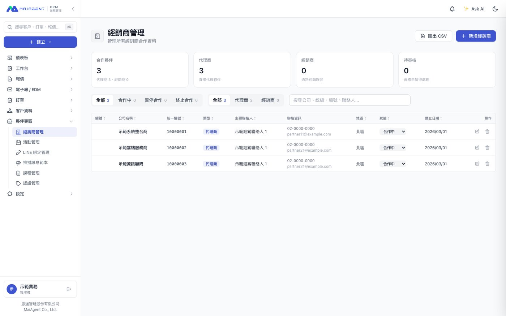
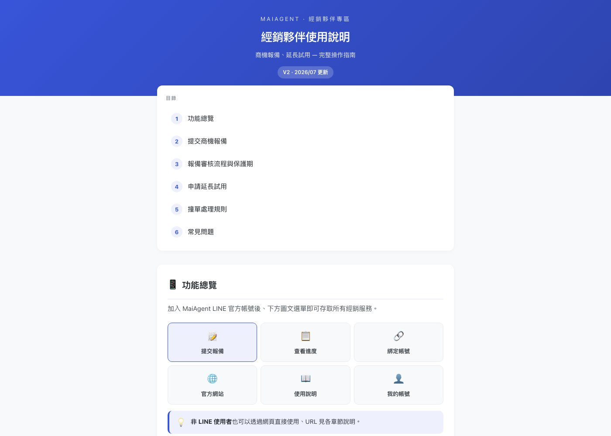
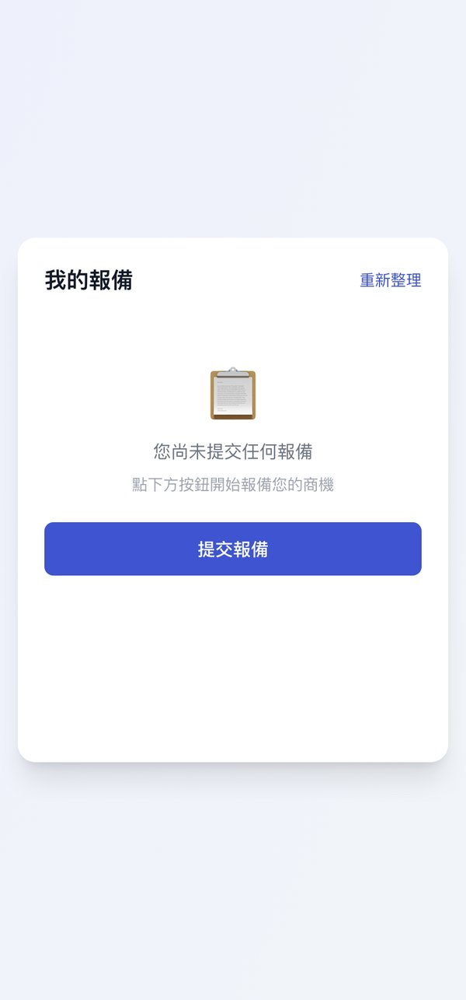
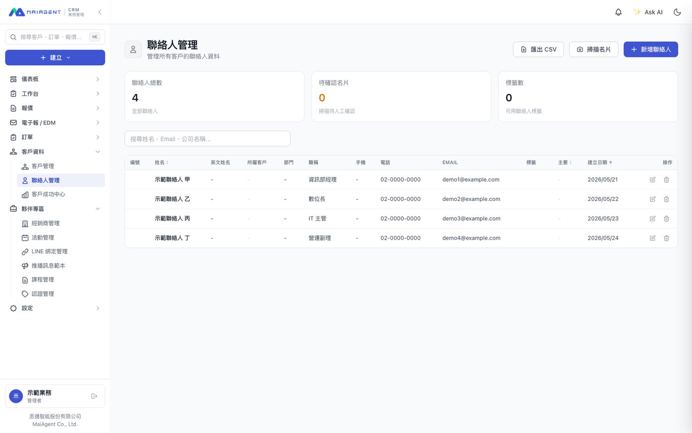
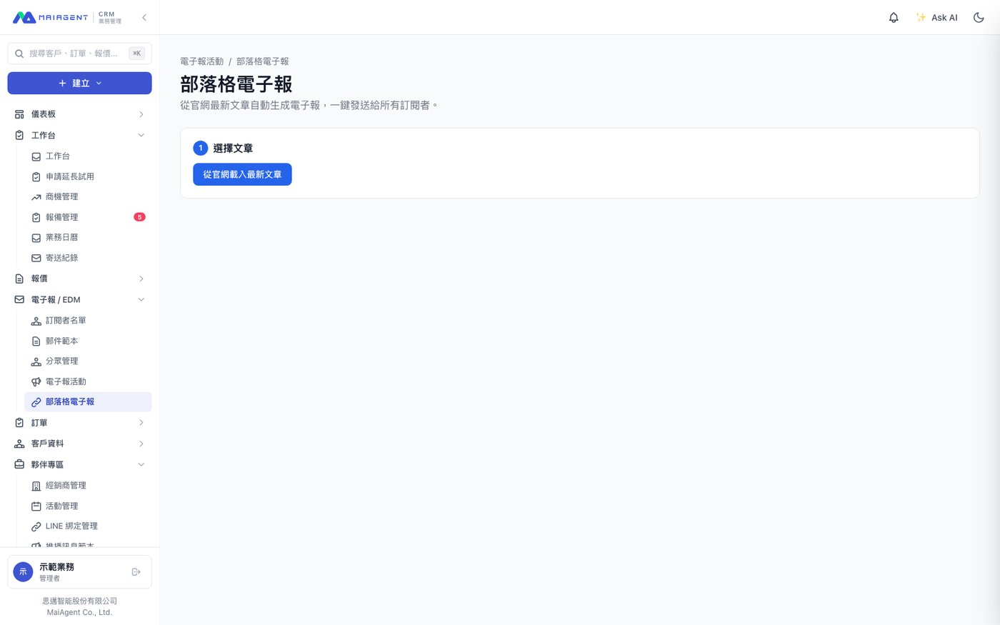

Sales CRM
The system the sales team works in daily — deals, customers and the reseller channel. A team project; I owned a few modules.

The reseller LINE channel
where most of the time went
Two resellers were talking to the same end customer, and nobody could say who had registered first or whether the protection window was still open. It turned into an argument between reps. Deals used to arrive by email and phone for someone on the sales side to key in; the manual work was the lesser problem, because collisions left no record of what happened first.
I moved the whole flow onto the company's LINE official account. Resellers submit a registration, check its progress and bind their account straight from the rich menu. The system checks for collisions at submit time, starts a 90-day protection window on approval, and warns before it expires. Internally there is a review queue, collision flags, conversion into an opportunity, and an audit trail on every status change.
Most of the detail work was about making resellers type less: a tax ID pulls in the company record, and a short trading name still finds the full registered one; a business card can be photographed straight into the form; and people who do not use LINE can do all of it on the web.
The last piece was a guide written for the resellers: what each menu item does, how registration and review work, how the protection window and collisions are handled, and an FAQ.




Other modules
Marketing / EDM: subscribers and tags, open tracking and attribution, and GDPR data requests. Attribution is first-touch, because what marketing wants to know is where a lead came from, not which email it clicked last.
Batch card scanning: several cards at once, Taiwanese phone and address formats normalised, duplicate emails flagged, and inline customer creation when there is no match. Speed was part of the work: a single card took over a minute before and about 15 seconds after; six people uploading at once took 61 seconds on the old architecture in a local load test, and 28 seconds in production after the rebuild.
I also owned soft delete with a recycle bin, order handover and the mobile responsive rebuild. The recycle bin covers five core tables in one place, so each module does not grow its own delete logic.
Built with AI-assisted development (Claude Code).

